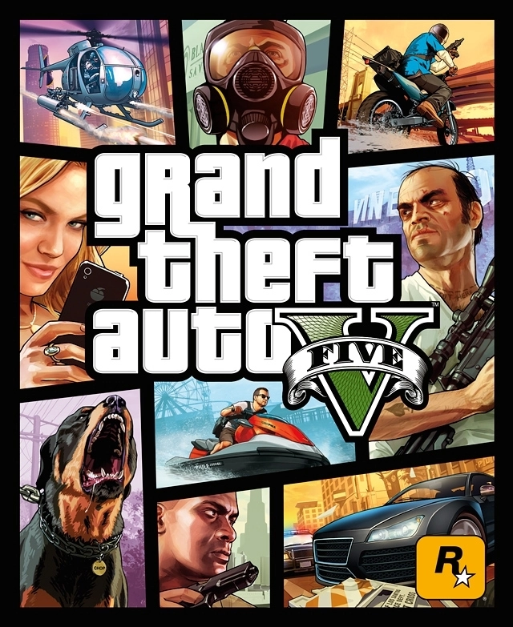
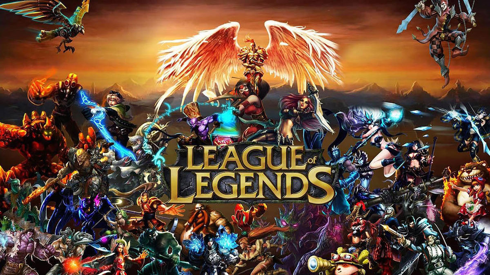
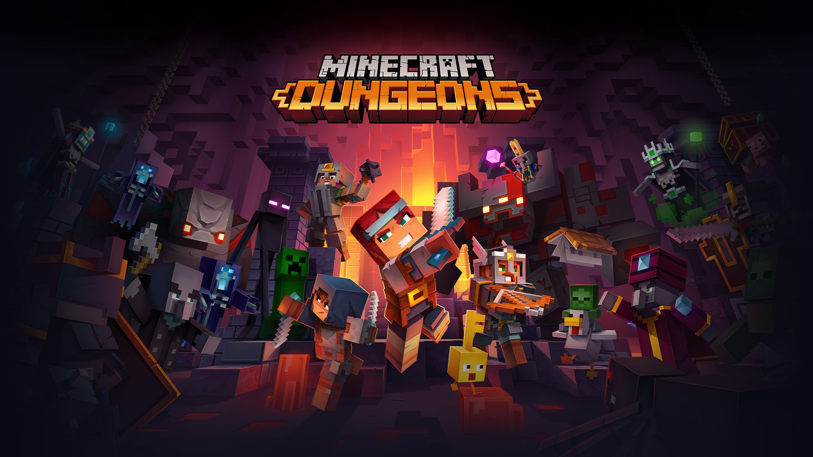

5.Grand Theft Auto V
Grand Theft Auto V is a 2013 action-adventure game developed by Rockstar North and published by Rockstar Games. It is the first main entry in the Grand Theft Auto series since 2008's Grand Theft Auto IV. Set within the fictional state of San Andreas, based on Southern California, the single-player story follows three protagonists—retired bank robber Michael De Santa, street gangster Franklin Clinton, and drug dealer and arms smuggler Trevor Philips.
6.PUPG

PlayerUnknown's Battlegrounds (PUBG) is an online multiplayer battle royale game developed and published by PUBG Corporation, a subsidiary of South Korean video game company Bluehole. The game is based on previous mods that were created by Brendan "PlayerUnknown" Greene for other games, inspired by the 2000 Japanese film Battle Royale, and expanded into a standalone game under Greene's creative direction.
7.Animal crossing Wild World

Animal Crossing: Wild World is a social simulation video game developed and published by Nintendo for the Nintendo DS handheld game console, released in Japan and North America in late 2005 and Europe in March 2006. It is the third installment in the Animal Crossing series, and the sequel to Animal Crossing on the GameCube.
8.League of Legends
League of Legends (LoL) is a multiplayer online battle arena video game developed and published by Riot Games for Microsoft Windows and macOS. Inspired by Defense of the Ancients, the game follows a freemium model. The game was released on October 27, 2009. An abridged version of the game called League of Legends: Wild Rift for mobile and console, was announced on October 15, 2019.
9.Grand Theft Auto San Andreas

Grand Theft Auto: San Andreas is a 2004 action-adventure game developed by Rockstar North and published by Rockstar Games. It is the seventh title in the Grand Theft Auto series, and the follow-up to the 2002 game Grand Theft Auto: Vice City. It was released in October 2004 for PlayStation 2, and in June 2005 for both Microsoft Windows and Xbox. The game, set within an open world environment that players can explore and interact with at their leisure, focuses on the story of former gangster Carl "CJ" Johnson, who is brought back home by the death of his mother, only to become involved in a long journey that sees him exploring the fictional U.S. state of San Andreas, which is heavily based on California and Nevada.
10.Minecraft Dungeons
Minecraft Dungeons is a dungeon crawler video game developed by Mojang Studios and Double Eleven. It was published by Xbox Game Studios. It is a spin-off of Minecraft and was released for Nintendo Switch, PlayStation 4, Windows, and Xbox One on May 26, 2020. The game received mixed reviews; many deemed the game fun and charming, with praise for its visuals and music. However, its simple gameplay and use of procedural generation received a more mixed reception, with its short story and lack of depth criticized.